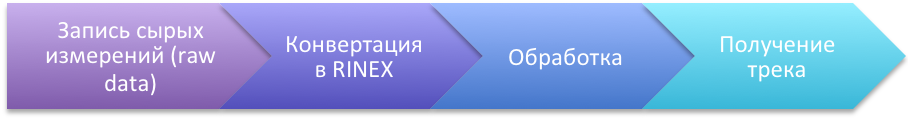
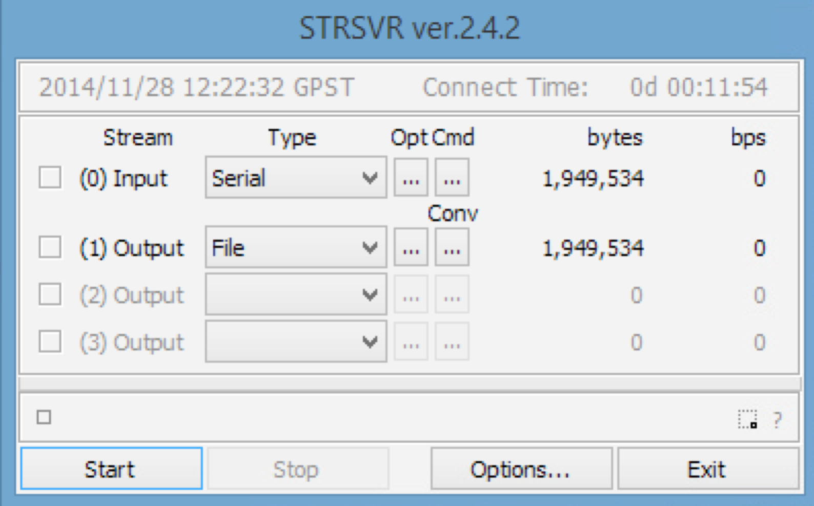
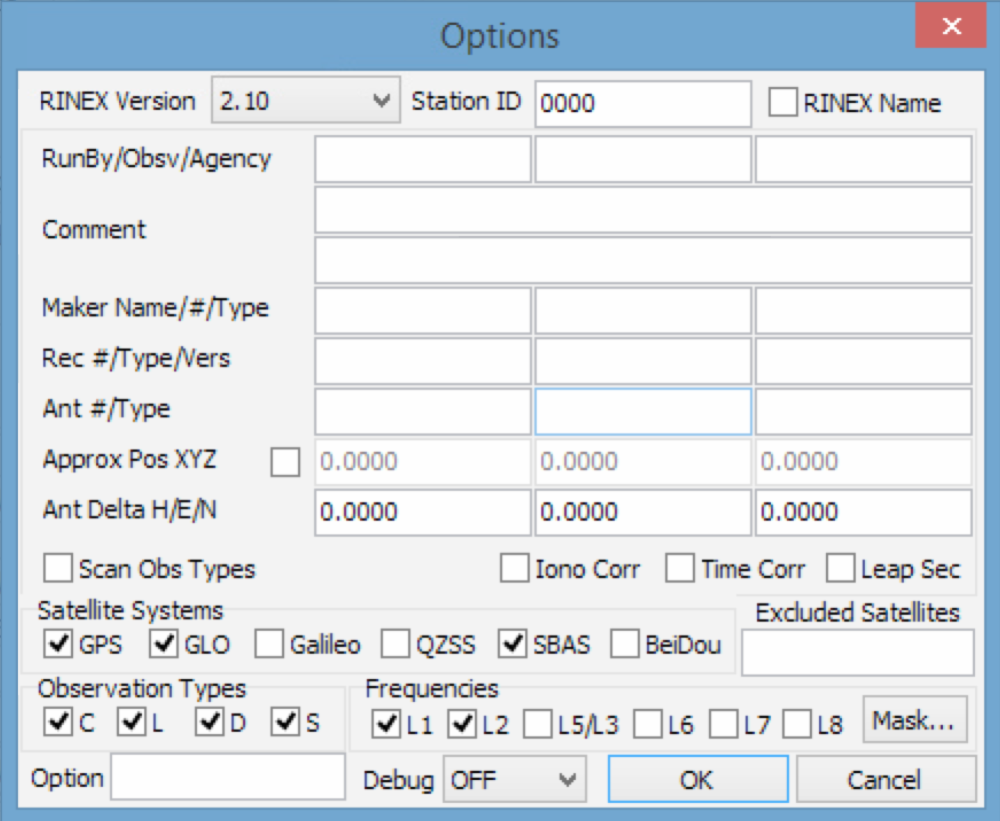
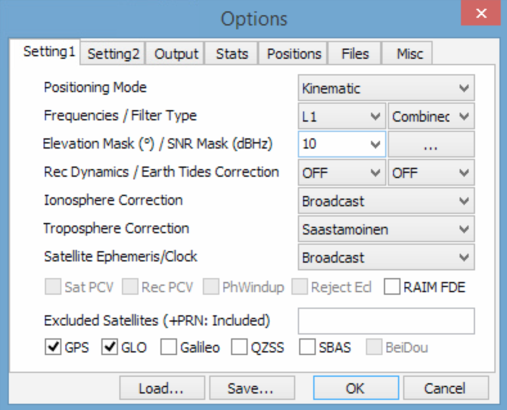
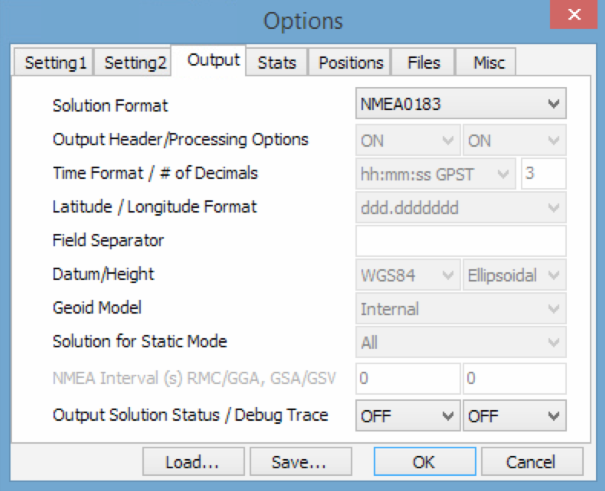
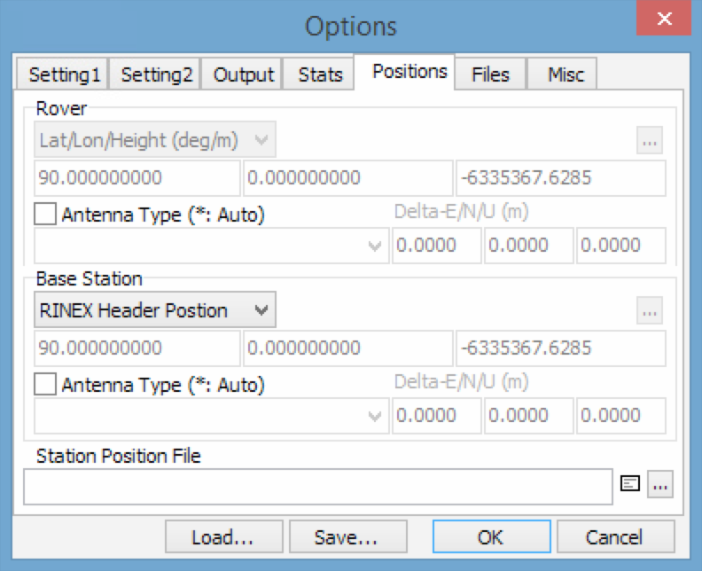
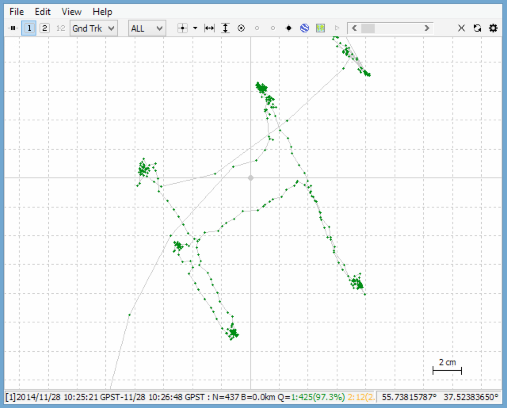
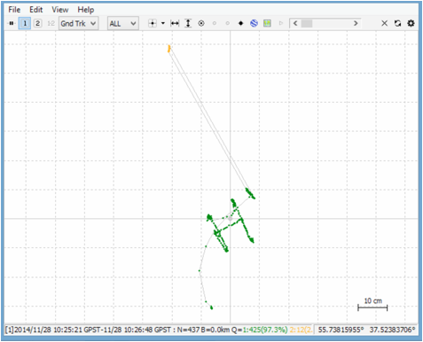

Здравствуйте!
К сожалению, я не нашел на Хабре упоминаний о замечательной библиотеке для обработки сырых измерений –
RTKLib. В связи с этим рискнул написать немного о том, как с её помощью можно получить сантиметры в относительной навигации.
Цель простая – обратить внимание общественности.
Сам я только недавно начал работать с этой библиотекой и был поражен её возможностями для простых смертных. В интернете достаточно много информации о практических примерах, но хотелось попробовать самому — и вот результат.
Итак, процесс в общем виде выглядит следующим образом:

Допустим, у нас есть два ГЛОНАСС/GPS приемника, с которых мы умеем получать сырые измерения (raw data). Сырыми они называются потому, что являются первичным материалом для обработки – псевдодальности, доплер, фазовые измерения…
С помощью утилиты STRSVR из состава библиотеки RTKLib нам необходимо записать два потока данных – один от базовой станции, которая будет неподвижно стоять, и второй – от ровера, который планируем перемещать. Запись от базы желательно стартовать заранее, минут за 10-15 до записи ровера.
В моем случае база находилась на крыше здания, а с ровером выходил на улицу. Для записи использовал два ноутбука.
1) Настраиваем Input – Serial обоих ноутах, это поток от GNSS приемника.

2) Output – File, это будет у нас файл сырых измерений.
3) Пускаем базу на запись – Start и неторопливо идем на открытую местность.
Для небольшой демонстрации распечатал лист А4 с буквой H, которую хотел обвести антенной, точнее основанием под установку на штатив. Антенна TW3440 производства Канадской компании Tallysman с заказной подстилающей поверхностью 30х30 см.
4) Располагаемся на мостовой, ставим ровер на запись и пытаемся медленно обвести буковку. Хоть на ровере стоит частота выдачи 5Гц, лучше уж все сделать тщательно.
5) По окончанию обводки сворачиваемся и идем смотреть что получилось.
6) Скидываем оба файла на один компьютер и приступаем к обработке.
7) Первое – надо из сырых данных получить стандартные RINEX файлы. В этом нам поможет RTKCONV:

8) Указываем путь к файлу с сырыми данными, а так же папку, куда программа поместит RINEX, формат сырых данных, в моем случае это NVS BINR и в настройках ставим галочки GPS и GLO, остальное можно не трогать.

9) Жмем Convert и получаем файлы для ровера и потом для базы, лучше их расположить в соответствующих папках Base и Rover.
10) Далее самое интересное – пост-обработка. Открываем утилиту RTKPOST.

11) Жмем Options, вкладка Settings 1, в настройке режима указываем Kinematic для обработки относительных измерений. Ставим галочки GPS и GLO, можно потом поиграться с настройками.

12) Вкладка Output – можно выставить формат выходных данных, например NMEA.

13) Важный момент – вкладка Positions, тут надо указать координаты базовой станции, либо взять их из заголовка, либо путем усреднения за период записи. Чем точнее знаем координаты базы тем точнее будут абсолютные координаты ровера.
Для примера укажем RINEX Header Position – взять из заголовка файла.

14) Нажимаем ОК и переходим в основное окно, там в поле Rover указываем путь к RINEX файлу ровера, ну и для базы путь к соответствующему файлу. Нажимаем Execute и ждем результат. После обработки можем посмотреть результат, нажав на Plot.

15) Внизу из рисунка видно, что решений с сантиметровой точностью получено 97.3%, остальное — это плавающее решение, точность которого значительно хуже.

На этом пока все.
Если кому будет интересно, могу написать как реализовать RTK режим.
Из обсуждения статьи:
Вопрос: Почему эти алгоритмы не применяются в бытовых GPS-навигаторах (например, трекерах)? Сырые данные там внутри же обрабатываются, и судя по статье, достаточно нажать пару кнопок с параметрами по умолчанию.
Ответ: В бытовых навигаторах это не применяется, потому что модель их использования не требует такой точности, зато требуется непрерывность определения координат. Поясню.
Бытовые приемники не используют фазовый дифференциальный метод, который описан в статье, совсем и никак. Они используют кодовый метод, который более надежен в смысле непрерывности получения решений задачи о положении приемника. Когда используется фазовый метод, для измерений нужно непрерывно следить за несколькими спутниками (чтобы не было «срыва фазы»), получать их сигнал без препятствий и переотражений. Когда же используется кодовый метод, точность приносится в жертву тому, что прием может кратковременно прерываться, отраженные от препятствий сигналы не выбрасываются из рассмотрения и так далее. Из-за этого китайский смартфон с антенной размером с пару тетрадных клеток продолжает выдавать (очень грубо, величина ошибки возрастает до многих десятков метров) координаты даже после внесения в помещение, а тем более — в салоне автомобиля. А при попытке получить реальную точность порядка единиц дециметров или сантиметров, такие фокусы не пройдут: открытое небо, исключение из рассмотрения спутников с низким углом возвышения и так далее. Туристу приходить на точку с субметровой точностью не нужно. Водителю (особенно с включенной в навигаторе функцией «прилипания» к дорогам) — тоже.
Кроме того, для дифференциального метода нужны базовые станции — сам по себе приемник в фазовом режиме почти никакого улучшения не даст. Во многих странах такая инфраструктура есть, и даже доступ к ней бесплатный, но стандартов существует несколько, а потому это все отдано на откуп профессионалам.
Технически, есть всего две области использования высокоточных измерений в любительских задачах: картографирование и управление беспилотниками.
Особенно перспективно применение такой штуки в любительской батиметрии — карты озер для рыболовства снимать с более точно известным положением сонара куда как эффективнее. Озера-то сверху ни чем не перекрыты. Плюс, абсолютное позиционирование с высокой точностью там не нужно, достаточно относительного.
С городским картографированием — сложнее. Тут, скорее, придется выбирать отдельные ориентиры (открытые улицы, набережные) для снятия референсных треков, а потом корректировать по ним привязку спутниковых снимков. Но для этого нужно найти координаты своей базы.
Управление беспилотниками в реальном времени тоже возможно, там ведь тоже далеко не всегда нужна абсолютная точность. В любительской аэрофотосъемке это может быть очень полезно.